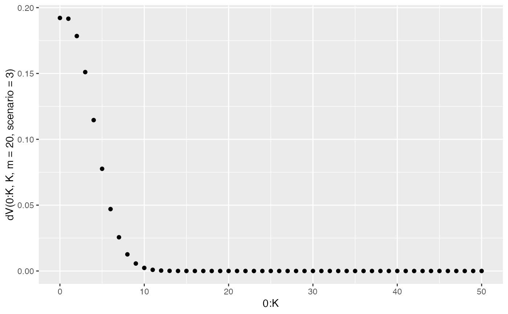

dV(x, K, m, scenario, type = "numeric")
Arguments
| x | vector of the number of picks of the data plot out of K evaluations |
|---|---|
| K | number of evaluations |
| m | size of the lineup |
| scenario | which scenario should be used? 1, 2, or 3? |
| type | one of "mpfr" or "numeric". Should the result be in arbitrary numeric length or be a numeric? Internally the Rmpfr package is used to get maximal precision. |
Examples
dV(0:5, 5, m=2, scenario=3)#> Warning: `dV()` is deprecated as of vinference 1.0.0. #> Please use `dVis()` instead. #> This warning is displayed once every 8 hours. #> Call `lifecycle::last_warnings()` to see where this warning was generated.#>#> Warning: package ‘Rmpfr’ was built under R version 4.0.2#>#> Warning: package ‘gmp’ was built under R version 4.0.2#> #>#> #> #>#>#> #>#> #> #>#> #> #>#> #> #>#> 0 1 2 3 4 5 #> 0.1212987 0.1703680 0.2083333 0.2083333 0.1703680 0.1212987#> Warning: `dVsim()` is deprecated as of vinference 1.0.0. #> Please use `dVis()` instead. #> This warning is displayed once every 8 hours. #> Call `lifecycle::last_warnings()` to see where this warning was generated.#> x scenario3 binom #> 1 0 0.1237 0.03125 #> 2 1 0.1658 0.15625 #> 3 2 0.2071 0.31250 #> 4 3 0.2075 0.31250 #> 5 4 0.1664 0.15625 #> 6 5 0.1295 0.03125#>#> Warning: package ‘ggplot2’ was built under R version 4.0.2## probabilities can be computed without numeric loss for K=50: K <- 50 print(qplot(0:K, dV(0:K, K, m=20, scenario=3)));#> [1] 1